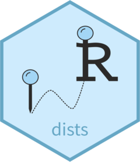

dists 
The goal of dists is to provide a common interface for executing different distance functions.
Get the full details here.
Installation
You can install the current version of dists executing the following code:
# install.package("devtools") devtools::install_github("noeliarico/dists")
Usage
The following example uses dists to compute the Euclidean distance between two vectors.
distanceBetween(1:3, 3:1, "euc")